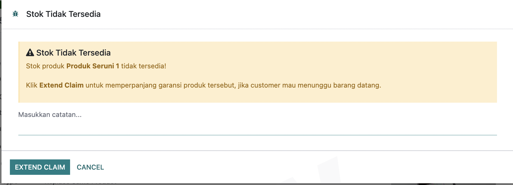

1. Prasyarat Utama Fitur Perpanjangan (Extend)
Sebelum masuk ke pengecekan masa garansi, sistem akan memvalidasi status produk di sistem terlebih dahulu. Jika product bisa diperpanjang maka akan menampilkan Pop-up pengisian alasan extend.

Catatan: Jika product tidak dapat diextend masa garansinya, sistem tidak akan menampilkan Pop up perpanjangan masa garansi dan langsung memproses claim jika product tersebut memiliki stock, jika tidak ada akan muncul Pop up "Product ini tidak tersedia dan tidak dapat melakukan extend".
2. CASE 1: Retur Saat Masa Garansi < 14 Hari
Kondisi ini terjadi ketika customer mengajukan klaim retur barang, namun sisa masa garansi aktif yang tercatat pada sistem kurang dari 14 hari dan product tersebut tidak tersedia di toko retur. Jika customer bersedia menunggu unit pengganti yang sama direstock, langkah sistem adalah:
Triggers & Validasi Pengisian:
- Sistem otomatis menampilkan Pop-Up Pertanyaan: "Apakah produk ingin di-extend?" disertai kolom Alasan/Notes Extend yang wajib diisi oleh CS.
- Jika disetujui, kalkulasi durasi baru dihitung sebanyak +14 hari dihitung dari tanggal pengajuan (Today).
Sistem memperpanjang kedua parameter tanggal sekaligus:
- Masa Garansi Pembelian = Today + 14 Hari
- Masa Garansi Pemakaian = Today + 14 Hari
Sistem hanya memperpanjang parameter pemakaian saja:
- Masa Garansi Pemakaian = Today + 14 Hari
3. CASE 2: Alur Otomatis Internal Transfer (ITF) > 14 Hari
Jika customer melakukan klaim retur saat masa garansi yang dimilikinya masih panjang (lebih dari 14 hari), sistem tidak memicu pop-up extend melainkan langsung mengecek ketersediaan fisik barang untuk pemenuhan klaim di toko/OU tempat retur diajukan.
Sistem otomatis memeriksa dan mengunci stok di Gudang Parangloe terlebih dahulu untuk ditarik menuju OU Retur terkait.
Jika Gudang Parangloe juga tidak memiliki stok, pencarian otomatis dialihkan untuk mengambil stok dari Toko terdekat dari radius lokasi Operating Unit (OU) Retur tersebut.
4. Alur Pembentukan Purchase Order (PO)
Masih dalam kondisi masa garansi customer > 14 hari, sistem akan membentuk draft dokumen Purchase Order (PO) baru ke supplier jika kondisi stok global itu kurang dari kebutuhan penjualan selama 60 hari.
Catatan Teknis: Kebutuhan 60 hari kedepan dihitung secara otomatis oleh sistem berdasarkan performa kecepatan penjualan rata-rata produk tersebut.